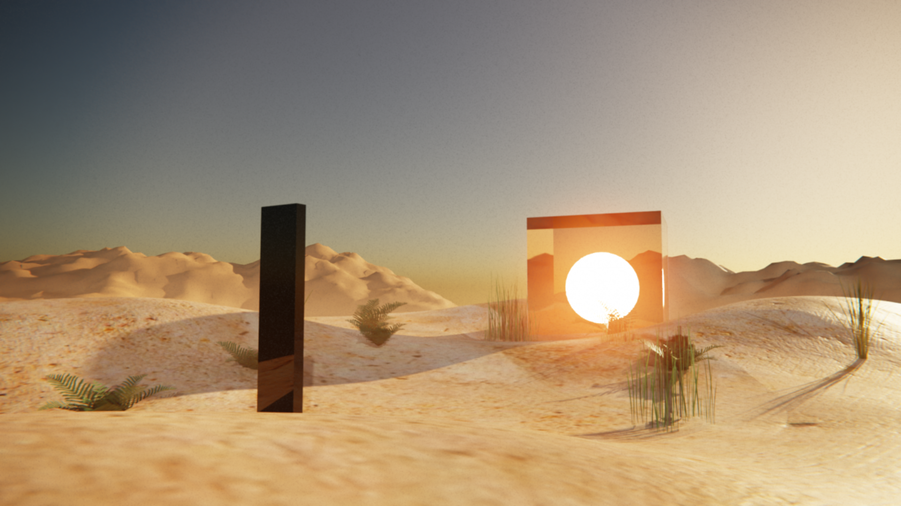

Tropical Climate Forensics
Artist: Derek Tumala | Medium: Digital Art | Year: 2022
Relevance: This digital desert scene makes extreme heat feel real. By showing a lone monolith and a glowing sun in a burned-out landscape, it reminds us that rising temperatures aren’t just numbers—they’re reshaping our homes, farms, and daily lives.
Analysis of Elements and Principles:
- Shape & Form: Monolith & portal slice through soft dunes; glowing orb anchors the gaze.
- Color & Value: Warm golds bathe the scene; deep shadows amp up drama.
- Texture & Space: Smooth, reflective sculptures vs. gritty sand; plants in front to faded dunes in back create depth.
- Balance & Emphasis: Vertical monolith counterbalances glowing portal; bright orb demands focus.
- Contrast & Movement: Light vs. dark & smooth vs. rough heighten tension; curving ridges and shadows guide the eye.
- Unity: Cohesive sunset palette and consistent low-angle light tie all elements together.